Last Updated: 2021-01-13
Tableau provides the ability to perform calculations on the data within reports and dashboards. These calculations can also be dynamic and call external services using Analytics Extensions. Analytic Extensions can receive data from Tableau in real time and return it back after it has been scored, transformed, or enriched by another service.
Typically these Analytic Extensions are built using custom code (e.g. Node.js, Python, etc..) but MuleSoft provides a way to quickly build and extend this capability to hundreds of other services and endpoints. You can easily build and deploy an Analytics Extension in a matter of minutes that allows you to connect your Tableau data with MuleSoft connectors to services like Salesforce, SAP, ServiceNow, etc...
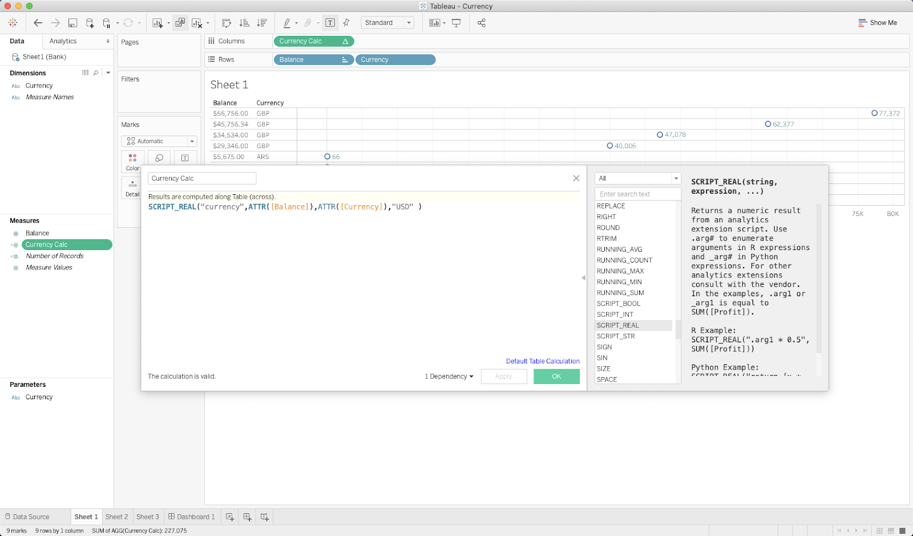
In this codelab, I'll walk you through the processes of setting up a MuleSoft API as a Tableau Analytics Extension from a template. We'll be using a template that provides the ability to calculate currency conversions.
To get started, navigate to the Github repository here and either clone the project locally or download the project by clicking on Code and then Download ZIP. If you downloaded the *.zip file, uncompress the file before proceeding.
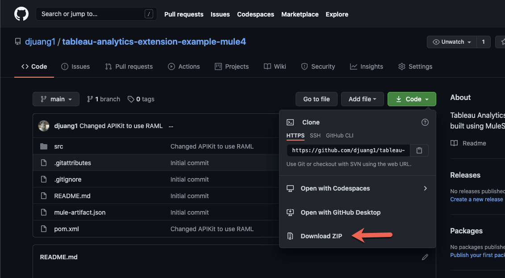
Switch to Anypoint Studio and click on File > Import. Expand the Anypoint Studio node and click on Anypoint Studio project from File System and click on Next >
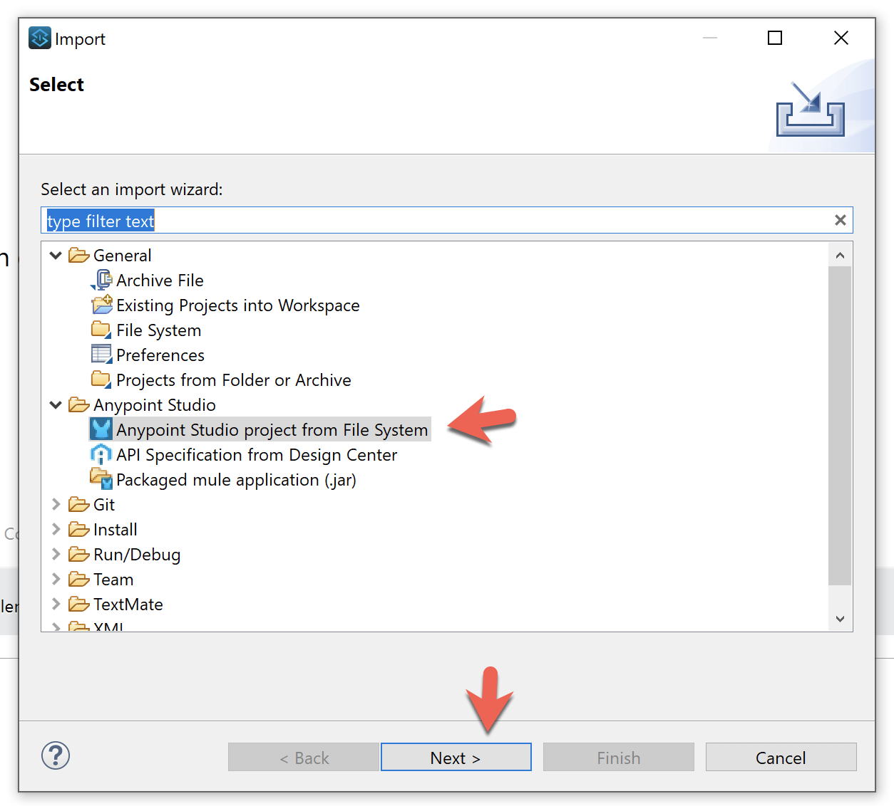
In the next screen, navigate to the project to populate the Project Root field. Click on Finish to complete the import of the project.
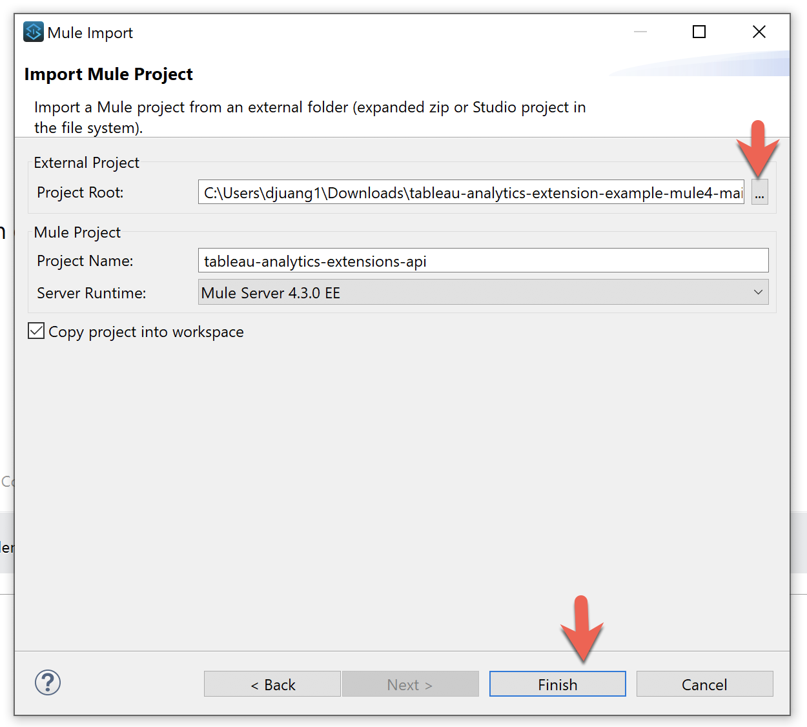
Let's take a look at the project to understand what the template provides. Navigate to the src/main/mule folder and double-click on the tableau-analytics-extensions-api.xml file to open it if it is not already open.
The template leverages the RAML specification for the Tableau Analytics Extension API that can be found in this Github repository here. The specifications are based on the API Reference documentation found here. There are two flows that correspond to methods required for Analytics Extensions and we'll cover those in the next two sections.
Scroll down and find the flow with the name get:\info:tableau-analytics-extensions-api-config
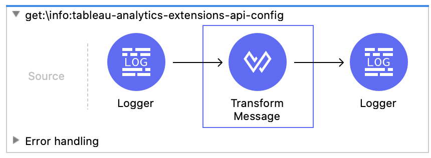
This flow allows Tableau to get information about the server. This is used to help understand how the analytics extension is configured such as whether authentication is required.
You can easily modify the DataWeave to dynamically return different information based on the request or what the backend is pointing to.
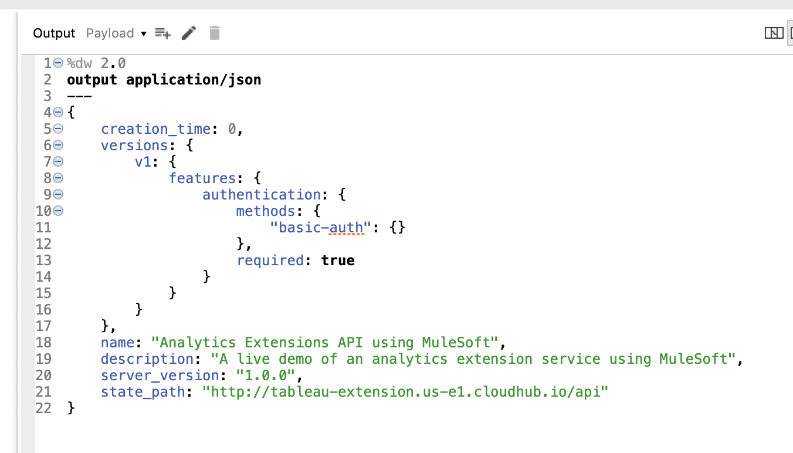
Scroll down and find the flow with the name post:\evaluate:application\json:tableau-analytics-extensions-api-config to see where all of the analysis using the service is done.
With MuleSoft, instead of writing custom code that looks like the following:
// -------------------- CURRENCY CONVERSION --------------------
exports.convert = async (data, callback) => {
let from = data._arg2[0];
let to = data._arg3[0];
let url = `https://openexchangerates.org/api/latest.json?symbols=${from},${to}&app_id=${process.env.CURRENCY_KEY}`;
// Get the exchange rate and convert
const response = await fetch(url);
const body = await response.json();
if (body.error) return callback([0], null);
let rate = body.rates[to] / body.rates[from];
let output = data._arg1.map(money => money * rate);
callback(null, output);
};the tooling allows you to simply drag and drop components from the Mule Palette to build logic that handles the the transformation and calculation of data being passed from Tableau.
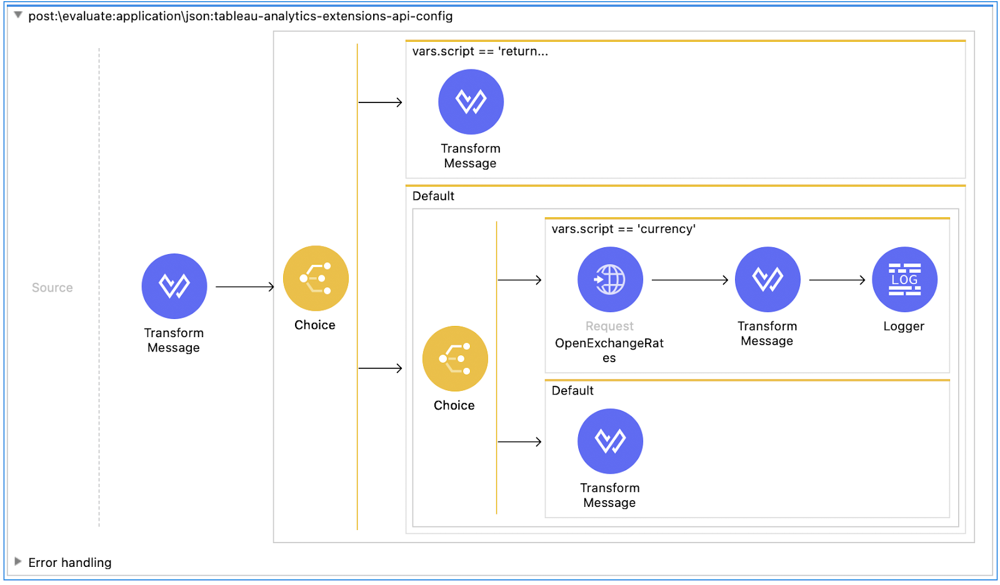
Let's walk through the flow to understand the design. The request from Tableau will always look like the following below.
POST /evaluate HTTP/1.1
Host: localhost:8081
Authorization: Basic dGVzdDp0ZXN0
Accept: */*
Accept-Encoding: gzip, deflate
User-Agent: Tableau Desktop 20201.20.0721.1350; pro; libcurl-client; 64-bit; en_US; Mac OS X 10.15.7;
TabPy-Client: Tableau Desktop Pro2020.1
Content-Type: application/json
Connection: Keep-Alive
Content-Length: 80
{"script":"currency","data":{"_arg1":[56756.0],"_arg2":["GBP"],"_arg3":["USD"]}}The "script" key tells the Analytics Extension what function to call. In this case, Tableau is passing in "currency".
The "data" key will pass in values that will be used for the calculation or lookup. The example shows that Tableau is passing in 3 arguments: 56756.0, GBP, and USD
The required format of what the response will look like is detailed below. This is an actual response from the template that has taken the currency in GBP and converted it to USD using the Open Exchange Rates web service.
HTTP/1.1 200 OK
Content-Type: application/json; charset=UTF-8
Content-Length: 41
Date: Thu, 14 Jan 2021 17:54:31 GMT
[
77694.09149274612391958450717721687
]The response needs to match the data type that the calling function from Tableau requires. There are 4 types available: Boolean, Integer, Real, and String
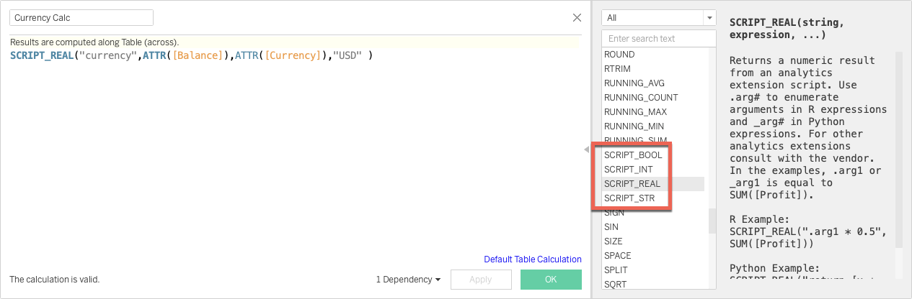
In the screenshot above, this is the script that generates the example request we talked about earlier.
SCRIPT_REAL("currency",ATTR([Balance]),ATTR([Currency]),"USD" )So going back to the flow in MuleSoft, the first When in the Choice router is required if authentication is enabled on the service. This is detailed here. When a SCRIPT_X function is evaluated, Tableau will make a dummy POST /evaluate call to the Analytics Extension with the following request:
{‘script': ‘return int(1)', ‘data': {‘_arg1': [4]}}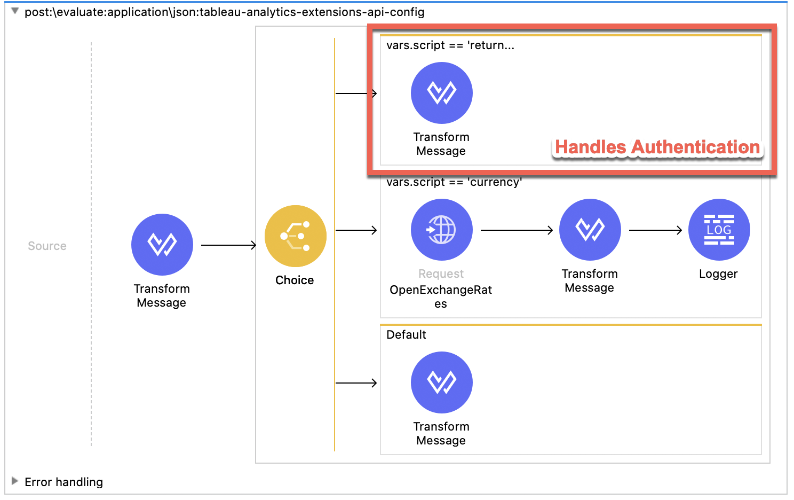
The response is required to be the integer 1 in order to successful validate the call.
The second When checks to see if the "script" value equals "currency". If true, this is where the extension calls the external service, in this case https://openexchangerates.org/, to pass in the data from Tableau to convert the currency.
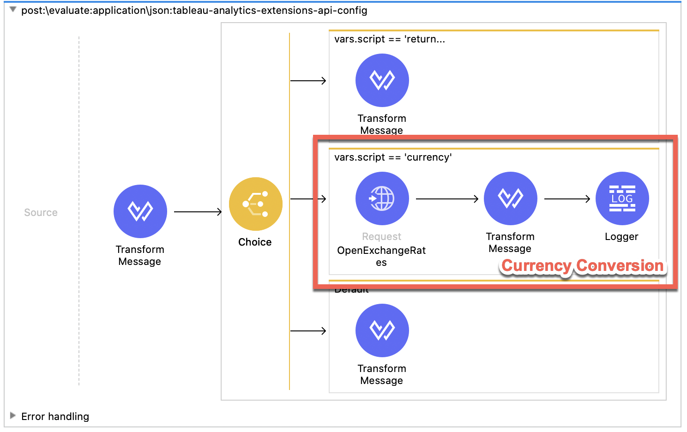
Clicking on the HTTP Request will open the Mule Properties window.
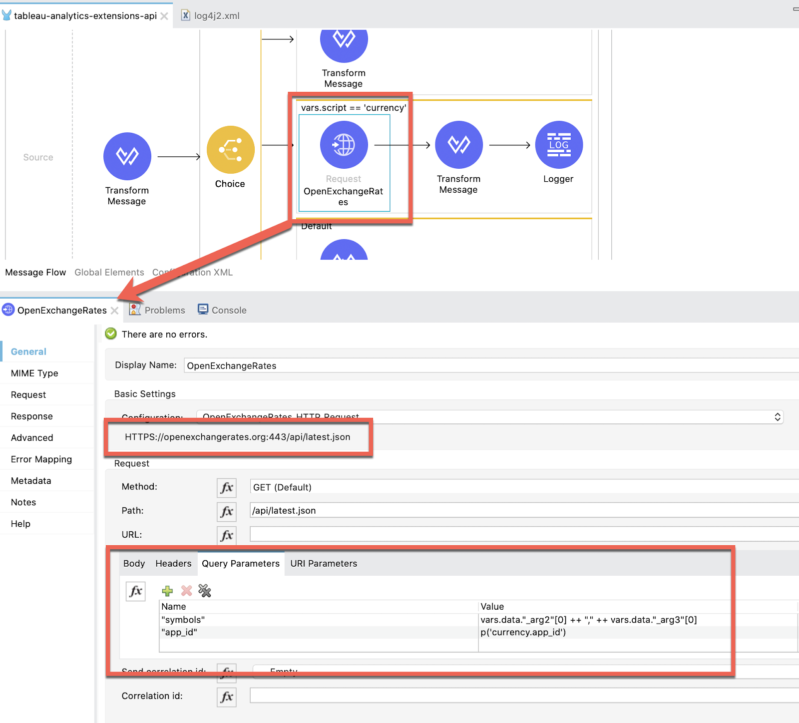
This component calls the GET /latest.json from Open Exchange Rates to convert the currency based on the arguments passed in as well as an App ID to grant access to the API. You can see how that is configured in the Query Parameters tab.
Lastly, the Transform Message component, after the HTTP Request, will perform the conversion using the data that is returned from the service.
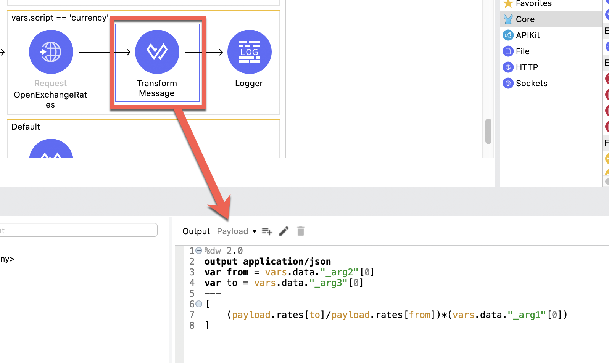
In the next section we're going to run the project in Studio.
Before we run the project, you'll need to sign up for an App ID in order to call the Exchange Rate API. Switch to your browser and go to https://openexchangerates.org/ to sign up for a free account and generate an App ID.
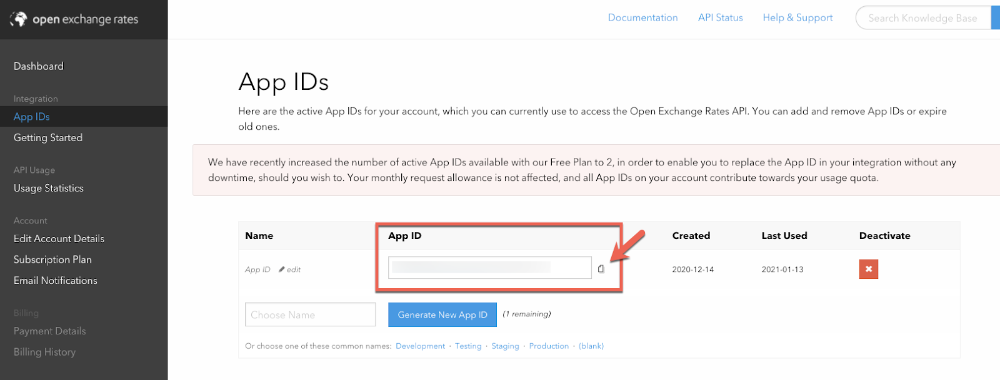
Once you have an App ID, go back to Anypoint Studio and expand the src/main/resources folder. Find and open the config.dev.yaml file. Fill in the app_id property in order for you to call the API from the project.
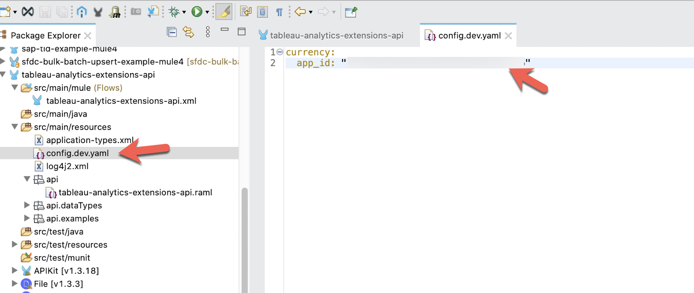
Switch back to the tableau-analytics-extensions-api tab and right-click on the canvas and click on Run project tableau-analytics-extensions-api
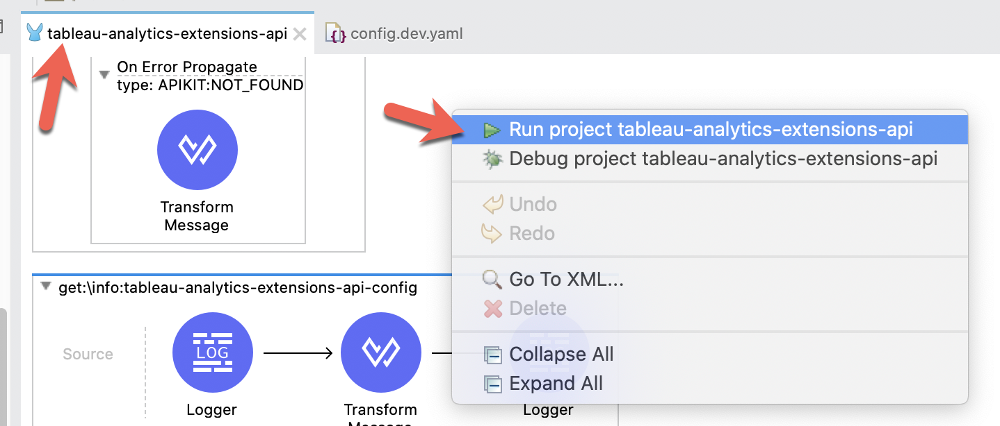
When the project is successful deployed, switch to your browser and navigate to the following URL
http://localhost:8081/api/consoleIf everything was configured successfully, you'll see the following screen.
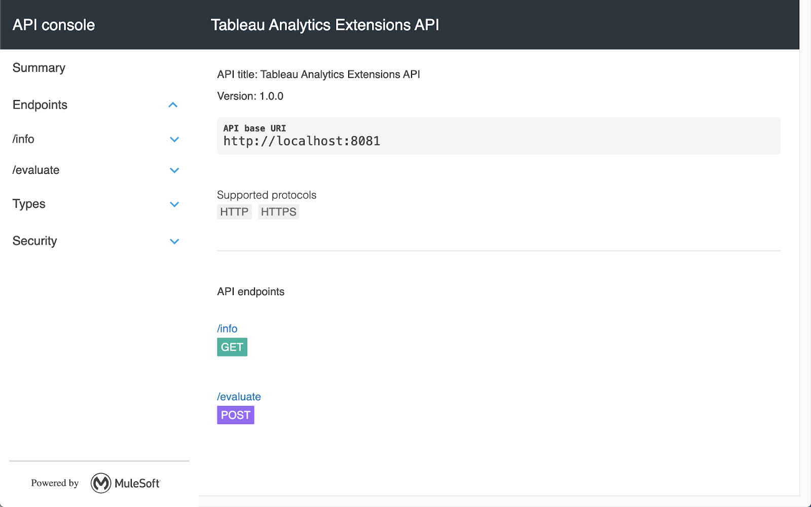
Assuming you having an existing project with some data already in Tableau Desktop, I'll show you how to set it up to use the Analytics Extension and configure a measure to call a SCRIPT_X function.
Navigate to Help > Settings and Performance > Manage Analytics Extension Connection...
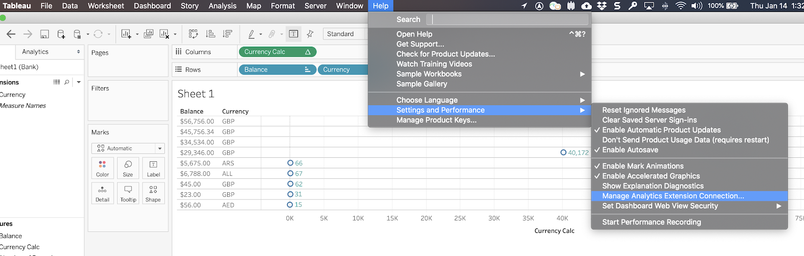
Change the dropdown to TabPy/External API. Set the Server to localhost and the Port to 8081.
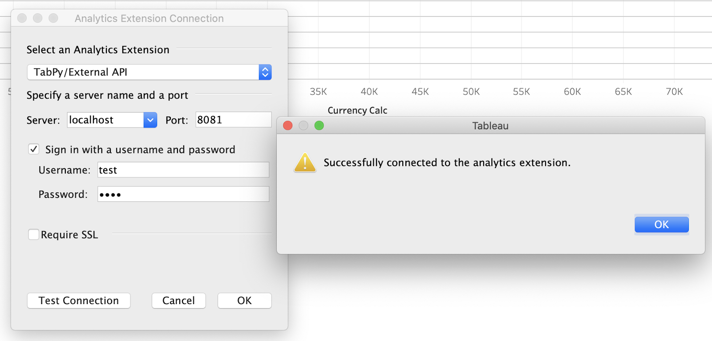
The Analytics Extension is setup with authentication so check the Sign in with a username and password checkbox and fill in the Username and Password with test and test.
Click on Test Connection and you should see a Successfully connected to the analytics extension dialog box.
Back in a Sheet, right-click in the Measures section and click on Create Calculated Field...
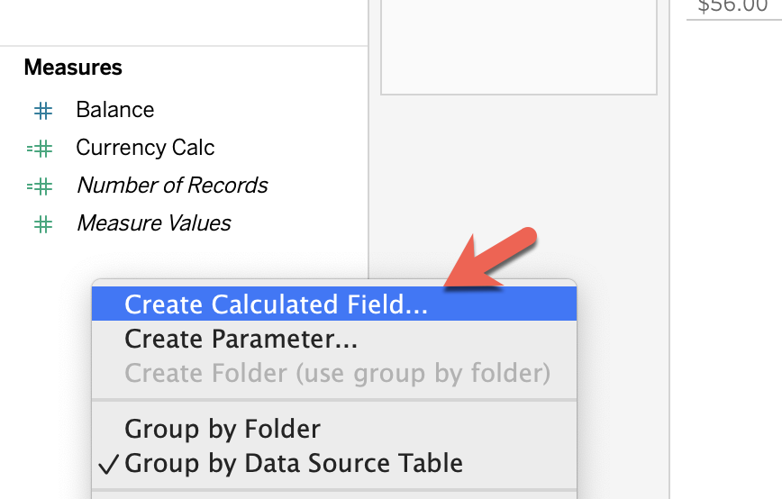
Give the measure a name (e.g. Currency Calc) and paste the following script in:
SCRIPT_REAL("currency",ATTR([Balance]),ATTR([Currency]),"USD" )Change the 2nd and 3rd arguments to match the data and fields in your project. You can also hard code the 3rd argument to be another currency like "GBP" but the 2nd arguments needs to be a real number that represents the currency value.
Again, this will differ based on the data in your project but if everything is configured correctly, you'll see the currency conversion in your report.
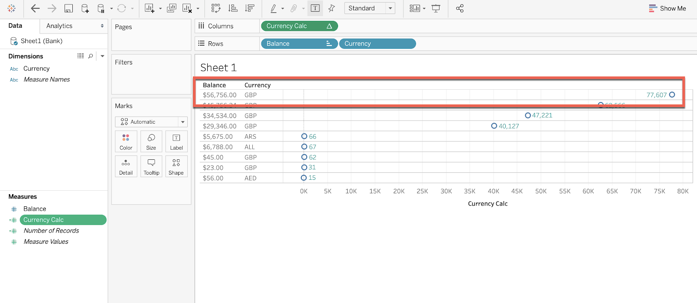
In this codelab, you learned how to setup a Tableau Analytics Extension using MuleSoft that can easily be configured. The template provided in this codelab is just an example of a single function that provides the ability to handle currency conversions. The extensibility of MuleSoft though allows you to add in multiple When blocks that can call other APIs and services to extend and make reports in Tableau more dynamic.
The Analytics Extension can be deployed into CloudHub and made available in your Application Network. Other systems and services can re-use the API as long as they follow the documented request format in the API specifications.